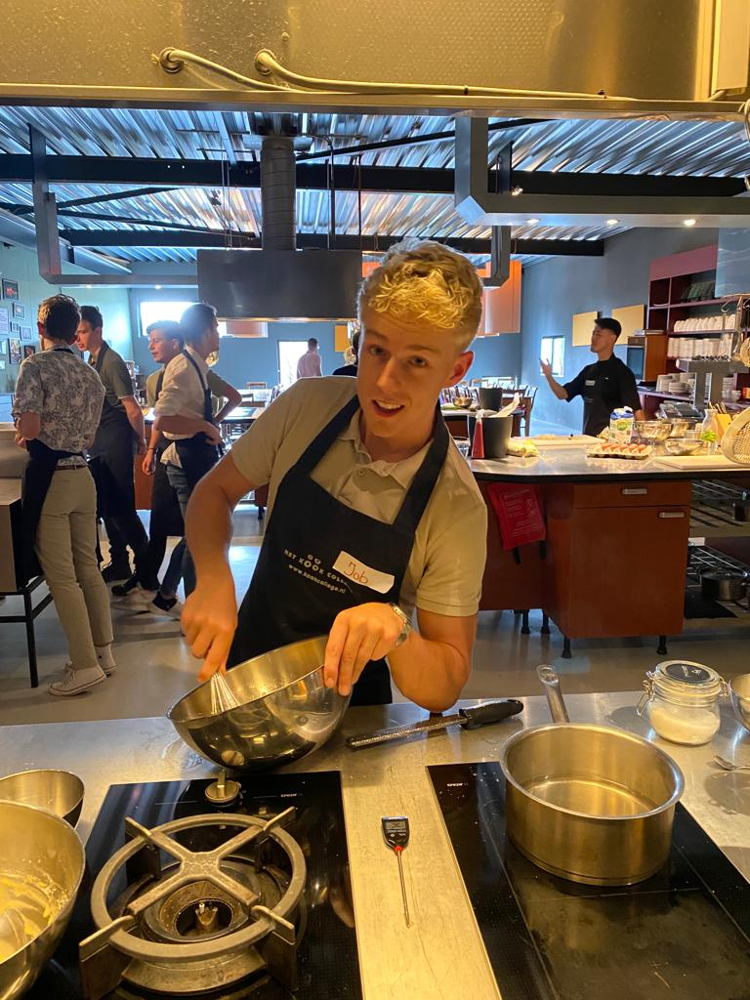

Kick-off minor
De eerste les van de minor was "Smart Me". Dit was tevens de kick-off van de minor. Ter voorbereiding heeft iedereen een persoonlijke
opdracht gekregen. Deze opdracht was een eerste verdieping op het onderwerp Smart Industry. We moesten voor ons zelf bepalen wat
dit voor ons inhield. En hiermee hebben we een 0-meting gerealiseerd. Aan het einde van de minor kan dan het verschil worden opgemaakt en
aan de hand daarvan kan je "Journey" gemeten worden. Hier draaid het allemaal om bij Smart Me. Je eigen Journey.
Ter illustratie hiervan is de banner van mijn portfolio een weg. Deze beschrijft mijn "Road to succes"
Ook hebben wij in deze les kennis gemaakt met de medestudenten. Door middel van verschillende kleine spellen werd je al wat uit je comfort-zone
getrokken. Dit was een leuke manier om elaar beter te leren kennen.
Kookworkshop
Een van de "Smart Me" workshops stond in het teken van co-creatie. Hiervoor hebben we mogen deelnemen aan een kookworkshop.
In eerste instantie dacht ik dat dit een workshop was om elkaar wat beter te leren kennen, maar al gauw kwam ik tot het besef dat hier
wel degelijk een idee achter zat.
We kregen de opdracht om een 3 gangen menu te realiseren met de producten die in kisten werden aangeleverd. Verder werd er weinig informatie
verstrekt. Doordat wij allemaal geen kook achtergrond hadden was het lastig om nu direct te gaan beginnen. En hier begon het pas eigenlijk echt.
Er was bewust weinig informatie gegeven om te kijken hoe we dit gingen oplossen. We moesten in teams opgedeeld worden en de eis van de "klant" moest
duidelijk worden. Hiervoor waren leiders nodig die naar voren stapte om dit te regelen. Evenals de tijd die in de gaten gehouden moest worden.
Het was lastig om met zo weinig ervaring in de koken een gesmeerd "project" te draaien. Zelf was ik onderdeel van het nagerecht team. Om dit optijd
af te krijgen waren we veel gefocust op onszelf en hebben wij ons niet veel met anderen bemoeid. Achteraf hadden we beter moeten communiceren om gezamenlijk
sneller tot een plan en resultaat te komen. Echter was het eindresultaat uiteindelijk een 3-gangen menu die zo goed als optijd af was.
Het is mij opgevallen dat een team in de keuken te vergelijken is met een team in een project organisatie. Er is een eis er is tijdsdruk en dit
moet bewaakt worden. Er moet duidelijk gecommuniceerd worden en het is van belang dat alle betrokkenen op de hoogte zijn. Dit inzicht was voor mij
erg waardevol en deze workshop zal ik nooit vergeten. Ik zal nog vaak terug refereren aan dit metafoor.
Fanatiek aan het roeren
Masterclass "techniek in de toekomst"
15 september
Onder leiding van Jos Sanders en Luc Dorenbosch werd een masterclass Job-Engineering gegegeven. Deze ging in op ons eigen werk in de toekomst
en welke invloed de technische revolutie hierop heeft. Hierin is de nadruk gelegd dat de techniek niet perse een bedreiging is voor de arbeidsmarkt
maar ook kansen biedt. Een ding is zeker en dat is dat de huidige arbeidsmarkt gaat veranderen. Een kleine zijstap hierop werd genomen. Luc ligte toe
dat de huidige manier van mensen werven voor een baan niet perse de juiste hoeft te zijn. De vraag in een vacature gaat altijd uit naar een diploma en
ervaring, terwijl er juist beter gericht kan worden op bepaalde competenties. Deze zin heeft veel indruk op mij gemaakt. Ik maakte direct de vertaalslag
voor mijzelf naar de kookworkshop, waaruit ik geconcludeerd heb dat een keukenteam hetzelfde functioneert als een projectteam. Dus dat veel banen
eigenlijk wel overeen komen kwa competenties, maar dat het uitvoerende werk gewoon anders is. Hierin ben ik het dus volledig eens geworden met Luc.
Al met al was dit een nuttige masterclass die mij interessante nieuwe inzichten heeft gegeven.
Masterclass "Master je brein"
15 september
Vanuit het bedrijf Oner Acedemy kwam oprichter Ilke Oner langs om een masterclass te geven over het brein en mindset.
Ilke heeft veel indruk op mij gemaakt. De manier zoals zij presenteerde is hoe ik het ook zou willen beheersen. Op een hele rustige,
maar toch enthousiaste manier wist Ilke ons van allerlei informatie te voorzien over het brein, je angsten, je mindset en hoe je hiermee om
kunt gaan.
Het onderwerp 'rapport' creeëren werd uitgebreid besproken. Hierin heb ik geleerd dat je jezelf afspiegeld op een ander en dat dus jouw manier
van handelen een gevoel oproept bij degene met wie je communiceert. Met betrekking tot mijn leerdoel profesionaliseren vindt ik dit heel erg interessant
Doordat je rapport creeërt kun je andere mensen veel beter mee krijgen en begrijpen. Hierdoor is het maken van een win-win situatie veel gemakkelijker.
In de periode die volgde na deze masterclass en in het project heb ik dit veelvoudig proberen toe te passen. Vooral door enthousiast te spreken en in te
spelen op de behoeftes van diegene is het mij denk ik gelukt om z'n win-win situatie te creeëren. Kortom; ik heb erg veel aan deze masterclass gehad
en er is hierdoor een begin gemaakt aan een skill die ik graag nog veel verder zou willen ontwikkelen.